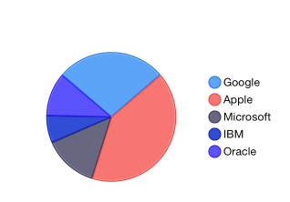
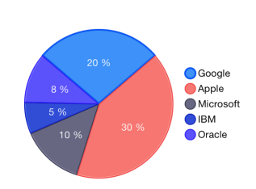
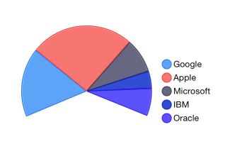

Chart Series: Pie
Unlike all other series, TKChartPieSeries do not require axes. They visualize each data point as pie slices with arc size directly proportional to the magnitude of the raw data point’s value. Pie slices represent data in one direction contrasting with the other series which represent data in two dimensions. Here is an example of how to create a pie chart with pie series populated with data:
Objective-C
NSMutableArray *pointsWithValueAndName = [[NSMutableArray alloc] init];
[pointsWithValueAndName addObject:[[TKChartDataPoint alloc] initWithName:@"Google" value:@20]];
[pointsWithValueAndName addObject:[[TKChartDataPoint alloc] initWithName:@"Apple" value:@30]];
[pointsWithValueAndName addObject:[[TKChartDataPoint alloc] initWithName:@"Microsoft" value:@10]];
[pointsWithValueAndName addObject:[[TKChartDataPoint alloc] initWithName:@"IBM" value:@5]];
[pointsWithValueAndName addObject:[[TKChartDataPoint alloc] initWithName:@"Oracle" value:@8 ]];
TKChartPieSeries *series = [[TKChartPieSeries alloc] initWithItems:pointsWithValueAndName];
[chart addSeries:series];
chart.legend.hidden = NO;
chart.legend.style.position = TKChartLegendPositionRight;
Swift
var pointsWithValueAndName = [TKChartDataPoint]()
pointsWithValueAndName.append(TKChartDataPoint(name: "Google", value: 20))
pointsWithValueAndName.append(TKChartDataPoint(name: "Apple", value: 30))
pointsWithValueAndName.append(TKChartDataPoint(name: "Microsoft", value: 10))
pointsWithValueAndName.append(TKChartDataPoint(name: "IBM", value: 5))
pointsWithValueAndName.append(TKChartDataPoint(name: "Oracle", value: 8))
let series = TKChartPieSeries(items: pointsWithValueAndName)
chart.addSeries(series)
chart.legend().hidden = false
chart.legend().style.position = TKChartLegendPosition.Right

Configure visual appearance of pie series
Pie series can be customized using the following properties:
The labelDisplayMode property controls whether to show labels inside ot outside the pie series. The possible choices are:
- TKChartPieSeriesLabelDisplayModeInside - labels are displayed inside the pie.
- TKChartPieSeriesLabelDisplayModeOutside - labels are displayed outside the pie.
Another interesting options that can be used to customize pie labels are stringFormat and formatter properties. For example, you can use the formatter property in order to show slice values as text:
Objective-C
series.labelDisplayMode = TKChartPieSeriesLabelDisplayModeInside;
NSNumberFormatter *numberFormatter = [[NSNumberFormatter alloc] init];
[numberFormatter setNumberStyle:NSNumberFormatterSpellOutStyle];
series.style.pointLabelStyle.formatter = numberFormatter;
Swift
series.labelDisplayMode = TKChartPieSeriesLabelDisplayMode.Isnide
var numberFormatter = NSNumberFormatter()
numberFormatter.numberStyle = NSNumberFormatterStyle.SpellOutStyle
series.style.pointLabelStyle.formatter = numberFormatter
Or use stringFormat property to format slice values as percents:
Objective-C
series.style.pointLabelStyle.stringFormat = @"%.0f %%";
Swift
series.style.pointLabelStyle.stringFormat = "%.0f %%"

The outerRadius property can increase and decrease the diameter of the series. By default, it occupies the whole plot area and is equal to 1. Setting the outerRadius to 0.9 will decrease the radius of the series by 10 percent. Similarly, the value 1.1 will increase it. Leaving the property with value 1 will make the donut fill the available space.
The expandRadius property is used when selecting a pie segment. It defines the extent to which the selected pie segment is shifted. Again, this property is measured in percents. A value of 1.1 defines that the selected segment will expand by 10% of the pie radius.
The startAngle and endAngle properties are used to define the pie range. The startAngle sets the angle in radians from which the drawing of the pie segments will begin. Its default value is 0. The endAngle determines whether the chart will appear as a full circle or a partial circle. Its default value is Pi*2.
The following code sets the startAngle and endAngle properties to show a half circle:
Objective-C
series.startAngle = - M_PI_4 / 2;
series.endAngle = M_PI + M_PI_4 / 2;
series.rotationAngle = M_PI;
Swift
series.startAngle = CGFloat(-M_PI_4 / 2)
series.endAngle = CGFloat(M_PI + M_PI_4 / 2)
series.rotationAngle = CGFloat(M_PI)

By default, the pie chart starts drawing its segments from 0 radians. You can customize this angle and rotate the chart. This is done by setting the rotationAngle property.
The selectionAngle property is used to rotate the chart when selecting a pie segment. It rotates the chart so that the selected pie segment appears at the specified by the property angle.
In order to select the second pie segment, call the select method of TKChart:
Objective-C
series.selectionMode = TKChartSeriesSelectionModeDataPoint;
[chart select:[[TKChartSelectionInfo alloc] initWithSeries:chart.series[0] dataPointIndex:1]];
Swift
series.selectionMode = TKChartSeriesSelectionMode.DataPoint
chart.select(TKChartSelectionInfo(series: series, dataPointIndex: 1))
Further information about selection in chart is available in this help article.